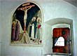
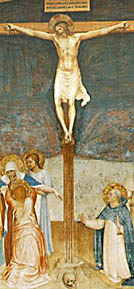

Gerard recuerda a Blaise Pascal, en la fecha de su Memorial: documento en que registró el momento de su "conversión" (o golpe de la Gracia , o qué se yo...).
Parece que este escrito lo llevó siempre encima, y lo encontraron en sus ropas cuando murió.
Ahí va:
-
Año de gracia de 1654.
Lunes, 23 de noviembre, día de S. Clemente, papa y mártir, y otros del martirologio.
Vigilia de S. Crisógono, mártir, y otros.
Desde alrededor de las diez y media hasta cerca de las doce y media de la noche.
Fuego.
Dios de Abraham, Dios de Isaac, Dios de Jacob,
no el dios de los filósofos y los sabios.
Certeza, certeza, sentimiento de gozo, paz
Dios de Jesucristo
Deum meum et deum vestrum.
(Dios mío y Dios vuestro.)
Tu Dios será mi Dios.
Olvido del mundo y de todo excepto de Dios.
Sólo se encuentra en los caminos que enseña el Evangelio.
Grandeza del alma humana.
Padre justo, el mundo no te ha conocido, pero yo sí te he conocido.
Alegría, alegría, alegría, lágrimas de alegría.
De él me aparté
Dereliquerunt me fontem aquae vivae.
(Se apartaron de mí, fuente de agua viva)
¿Me abandonarás, Dios mío?
Que no me vea eternamente separado.
Esta es la vida eterna, que te conozcan a ti,
único Dios verdadero, y a aquel a quien enviaste, J.C.
Jesucristo
Jesucristo
De él me separé, lo rehuí, negué, crucifiqué
Que no me vea ya nunca separado de él
Sólo se retiene mediante los caminos que enseña el Evangelio.
Renunciación total y dulce
Sumisión total a Jesucristo y a mi director
Eternamente en gozo por un día de ejercicio sobre la tierra
Non obliviscar sermones tuos.
(Que no olvide las palabras tuyas.)
Amen
Alguien me acerca uno de esos tests, tan populares en los weblogs últimamente; especie de juego basado en un multiple choice, que supuestamente te ubica dentro de clasificaciones o categorizaciones de lo más variadas. Este, por ejemplo (en inglés), "detecta" qué teólogo cristiano sos ?.
Tengo dos problemas con estas cosas: primero, que tiendo a desconfiar de la "calidad" del test: cómo sé que el que lo hizo tiene algún criterio ? (sí, ya sé: es un juego, no hay que tomarlo en serio; pero bueno...); segundo: la mayoría de estos tests contienen preguntas sobre gustos, comportamientos, opiniones... y suele pasar que o bien la pregunta casi no tiene sentido para mí, o bien las opciones no me satisfacen para nada...
Veamos este ejemplo.
La primer pregunta es :
"1. Cuando se trata de discutir:
a. mandás a todos al diablo, especialmente si son estúpidos
b. considerás que el debate es saludable y generalmente es productivo
c. te gusta ver que cada uno tiene sus propios caminos
d. sos suave con todos, por amor a la humanidad
e. evitás la confrontación, pero tratando de refutar la tontería cuando es posible
f. explicás cómo son las cosas, pero los mandás al diablo si se ponen insistentes "
Y bueno... yo elegiría 1/6 de cada una! De verdad, yo hago las seis cosas,
(según las circunstancias...), me resulta imposible elegir una.
Y no me digan que "no se trata de responder 'qué te parece
correcto hacer',
sino 'qué hacés normalmente' ", ya sé, de eso estoy hablando.
Siguiendo: con la pregunta 2, me pasa algo parecido... sólo eliminaría la f.
Y la 3 (Cuando estás aburrido, lo más probable es que te inclines por:... ) es el otro caso; prácticamente nunca 'estoy aburrido', y si lo estuviera,
no haría ninguna de las seis actividades propuestas.
Bueno. Llené el test, igual, tratando de ser lo menos arbitrario posible,
y me salió Karl Barth (!). Pero, además de todo dicho,
esto me resulta menos significativo aún porque probé de repetirlo
con respuestas más 'alejadas' de mí ... y me salió lo mismo.
En otros intentos, salieron San Agustín y Calvino (ugh! never!).
No sé qué otros posibles resultados habrá... y tampoco sé quién me
gustaría "ser"... Supongo que Santo Tomás.
-
...
Largo tiempo has soñado sueños despreciables,
mas ahora te quito la venda de los ojos,
para que te acostumbres al resplandor de la luz
y de cada uno de los momentos de tu vida.
Largo tiempo has vadeado, asido de una tabla, cerca de la playa,
ahora quiero que seas un nadador intrépido,
que saltes en medio del mar, que te levantes,
que me hagas señas, que agites el agua con tus cabellos.
Walt Whitman (Canto de mí mismo; 28)
Como era de esperar, "mi exégesis" espiritual (guau!)del episodio de llanto de Jesús sobre Jerusalén, no es precisamente original. Busqué en la Catena Aurea, y veo que el gran Orígenes (185 - 254) me madrugó unos siglos. Dice por ahí:
-
... [Jesús] llora además por nuestra Jerusalén, a la que, después que ha pecado, sitian sus enemigos, esto es, el espíritu maligno, y la rodean de trincheras para cercarla v no dejar piedra sobre piedra; especialmente cuando alguno es vencido después de mucha continencia y de algunos años de castidad, y atraído por los halagos de la carne, pierde la paciencia y la castidad.
Y San Gregorio (Papa medieval) no se queda atrás:
-
Los espíritus malignos asedian el alma en cuanto sale del cuerpo, la seducen mientras está unida a la carne, con los deleites falaces, la rodean de trincheras, presentando a su vista las iniquidades que
cometió, y la estrechan con los quo son compañeros de su condenación, con el fin de que ella vea, una vez en el último instante de su vida, la clase de enemigos que la asedian y no pueda encontrar medio de evadirse, porque ya no puede hacer el bien, que despreció cuando pudo hacerle : estrechan al alma por todas partes poniéndole a la vista la iniquidad, no sólo de sus obras, sino también de sus palabras y de sus pensamientos; para que así como antes se había solazado tanto en la maldad, sienta en su última hora la angustia que merece en pago.
Entonces el alma, por la condición de su culpa, se aterra cuando ve que su carne, que creyó que era su vida, va a convertirse en polvo; entonces mueren sus hijos, cuando los pensamientos ilícitos, que ahora nacen de ella, se disipan en el último momento de la venganza; estos pensamientos pueden representarse por las piedras. El alma perversa, cuando añade a un pensamiento malo otro peor, pone, por decirlo así, una piedra sobre otra; pero cuando es llevada a su castigo, se destruye todo el edificio de sus pensamientos.
Sin embargo, el Señor visita al alma culpable, para su enseñanza, alguna vez con el castigo, otras con los milagros, con el fin de que conozca las verdades que ignoraba, y menospreciando el mal vuelva por la compunción del dolor u obligada por los beneficios se avergüence de lo mal que obró. Y si no conoce el tiempo en que es visitada, al final de su vida es entregada a sus enemigos, con quienes se verá unida en el juicio eterno de su perpetua condenación.
De todas maneras, a mí me gusta más pensar que "los hijos" y "las piedras" son simplemente las cosas que uno "hizo", nuestros "logros y realizaciones", que (materiales, intelectuales... también religiosos), que -cuando a uno le lavan los ojos, cuando uno ve qué mal invirtió los talentos recibidos- no resultan más que "paja"....
Siguiendo con Gregorio el Grande: sigo leyendo en la Catena y me encuentro con el comentario a la lectura que sigue (la que se leyó hoy en misa), cuando Jesús expulsa a los mercaderes del templo... Dice San Gregorio:
-
Después de haber predicho los males que habían de venir [cuando lloró
sobre Jerusalén], Jesús entró al templo para arrojar de allí a los que vendían
y compraban, dando a conocer que la ruina del pueblo
venía principalmente por culpa de los sacerdotes.
A éste sí se le cabe eso de "Qué grande!".
A propósito de lo de las paradojas, conversando con una amiga sobre la de Epiménides ("los cretenses son todos mentirosos", dice, cretense él...), me acuerdo de esto que me olvidé de comentar; no es importante, pero es curioso:
Resulta que, al parecer, este dicho era muy conocido en el mundo culto del siglo I ; pues una de las cartas de San Pablo (I Tito, 1:12 ) hace referencia a eso. Pero no está claro si San Pablo lo conocía como paradoja, o si no entendió el asunto, o si está hablando de otra cosa, o qué.
Gana. ("tener gana -o ganas- de", "no se me da la gana").
Unamuno gustaba mucho de esta palabra, tan española; en inglés, por ejemplo, no hay nada parecido... (veamos...: will ? nah!... wish? tampoco desire ? menos ).
Hay que amar el idioma (cosa rara en estos tiempos, tan desamorados de "lo dado"), para compartir esa admiración; el placer de saborear una palabra, como un fruto que el espíritu de tu cultura (palabra bastardeada si las hay) supo darte ...
... hacer algo de mala gana.
Miro alrededor,
y parece que casi todos viven de mala gana.
[Postscriptum levemente insidioso: por algo uno encuentra tantos libros y lectores de Cortázar por ahí ... y tan pocos de Wodehouse]
-
El rezo del Rosario: 31 días, 31 maneras -
Número 28
- He aquí que prosperará mi Siervo,
- será enaltecido, levantado y ensalzado sobremanera.
- Así como se asombraron de él muchos
- pues tan desfigurado tenía el aspecto que no parecía hombre,
- ni su apariencia era humana
- otro tanto se admirarán muchas naciones
- ante él cerrarán los reyes la boca
- pues lo que nunca se les contó verán
- lo que nunca oyeron reconocerán.
- ¿Quién dio crédito a nuestra noticia?
- Y el brazo de Yahveh ¿a quién se le reveló?
- Creció como un retoño delante de él,
- como raíz de tierra árida
- No tenía apariencia ni presencia para mirarlo
- y no tenía belleza que pudiésemos estimar.
- Despreciable y desecho de hombres
- varón de dolores
- y sabedor de dolencias,
- como uno ante quien se oculta el rostro
- despreciable, y no le tuvimos en cuenta.
- Y con todo eran nuestras dolencias las que él llevaba y nuestros dolores los que soportaba
- Nosotros le tuvimos por azotado,
- herido de Dios y humillado.
- Pero él fue herido por nuestras rebeldías,
- molido por nuestras culpas
- El soportó el castigo que nos trae la paz,
- y con sus llagas hemos sido curados.
- Todos nosotros como ovejas erramos,
- cada uno marchó por su camino
- y Yahveh descargó sobre él la culpa de todos nosotros
- Fue oprimido, y él se humilló y no abrió la boca
- Como un cordero al degüello era llevado,
- y como oveja que ante los que la trasquilan está muda
- tampoco él abrió la boca.
- Tras arresto y juicio fue arrebatado,
- y de sus contemporáneos, ¿quién se preocupa? Fue arrancado de la tierra de los vivos;
- por las rebeldías de su pueblo ha sido herido;
- y se puso su sepultura entre los malvados y con los ricos su tumba
- por más que no hizo atropello
- ni hubo engaño en su boca
- Mas plugo a Yahveh quebrantarle con dolencias
- Si se da a sí mismo en expiación
- verá descendencia, alargará sus días,
- y lo que plazca a Yahveh se cumplirá por su mano.
- Por las fatigas de su alma, verá luz, se saciará.
- Por su conocimiento justificará mi Siervo a muchos
- y las culpas de ellos él soportará.
- Por eso le daré su parte entre los grandes y con poderosos repartirá despojos,
- ya que indefenso se entregó a la muerte y con los rebeldes fue contado,
- cuando él llevó el pecado de muchos, e intercedió por los rebeldes.
( por John Da Fiesole de Disputations; adaptación y traducción libre )
Si alguna editorial católica me contratara para escribir tres libros, uno de ellos se titularía "El profeta del Rosario"; comentaría -unas 50000 palabras- cómo el libro de Isaías profetiza los misterios del Rosario. Es un título llamativo, creo; pero dado que Isaías profetiza la vida, muerte y resurrección de Jesús, el libro se escribiría prácticamente solo (aunque reconozco que alguna que una o dos veces me he atrasado en mis entregas...).
Los capítulos más fáciles serían los Misterios Dolorosos, pues la canción cuarta del Siervo Sufriente (Is. 52:13-53:12) es casi una recitación de estos misterios, en forma poética. En realidad, si uno no se preocupa excesivamente en hacer corresponder cada verso del poema con el misterio más apropiado, resulta hecho a medida para un Rosario bíblico:
La Agonía en el Huerto
Los azotes en la columna
La Corona de Espinas
Cargando la cruz
Crucifixión y muerte
Resulta que otros dos Cantos del Siervo pueden servir:
Isaías 42:1-4 para los Misterios de Luz,
Isaías 49:1-6 para los Misterios Gozosos
(en cuanto a los Misterios Gloriosos, bien podríamos usar
Isaías 52:7-10); aunque resultan demasiado breves para
proveer un conjunto completo de 50 versos para un Rosario
bíblico.
Lo que sugiero, es recitar (o cantar!) el canto completo
al comienzo del Rosario,
haciendo presente al pasado en la perspectiva de los
misterios -futuros- (tal como nuestra meditaciones actuales son un retorno desde
el futuro hacia los misterios -pasados-) con la vida de Jesús, su muerte y
resurrección como acontecimiento central de la historia.
Una muestra de Gilbert & Sullivan, los grandes de la opereta victoriana; en Flos Carmeli; con midi.
Conozco muy poco, pero tengo una simpatía inmediata por esas cosas... y estoy seguro de que si tuviera oportunidad de disfrutarlo, me haría un adicto como el mismo Steven (y Chesterton, y tantos).
En español, como era de esperar, casi no se encuentran páginas; algo acá, y varias referencias sueltas por la película reciente Topsy-turvy (demasiado toques "modernos" -en el sentido ideológico de la palabra- para mi gusto, pero con algunos momentos felices...).
Las paradojas de tipo lógico-formal (o matemático), la de Epiménides, la de Zenón, etc, suelen ser objeto de devoción de personas con quienes uno no tiene mucha sintonía intelectual (simpatizantes de M. Escher, Martin Gardner, C. Sagan, etc).
- "esas cosas te dejan pensando...", dicen unos, como cuando salen de ver una película "con mensaje" (qué van a pensar! en todo caso, los deja con la ilusión de que algún día van a empezar a pensar)
- "lo bueno de las paradojas es que te hacen dudar del poder de la razón" (otra bobada, frecuentada por gentes que poco uso han dado a su razón como para conocer sus límites; de la razón hay que desconfiar, pase; pero no por esos motivos, no en ese plano)
- "alimentan la esperanza de que el mundo sea irreal" (claro... el sueño de los desesperados, los que odian el mundo y a sí mismos).
Convengamos, igual, en que algunas paradojas han sido
intelectualmente fructíferas (desde los sofistas ... y el mismo Sócrates; hasta
Frege/Russel... ).
Convengamos también en que hace falta fuerza intelectual no sólo
para desatar una paradoja, sino ante todo para apreciar su fuerza
(pienso en la(s) de Zenón, que tanto estudiante de Análisis
Matemático tiene por "cosa superada"... ). [*]
Como sea, creo que a mí esas paradojas nunca me han "hecho pensar";
culpa mía, tal vez. Pero -y ese es el punto de partida de este post- hay
una paradoja que por algún extraño motivo -acaso porque
tiene algo más de literatura- siempre me ha
estado rondando en la cabeza: la paradoja del condenado a muerte.
La leí hace mucho tiempo, en mi adolescencia, -si no recuerdo mal- en una
Humor y Juegos y nunca la reencontré.
Se me ocurrió relatarla acá, pero antes -cuándo no- busqué en Google...
y la encontré acá.
Repito: no es nada que me parezca muy iluminador ni
estimulante para el intelecto. Pero, como curiosidad,
encuentro esta
otra página sobre la misma paradoja, y -amén de las gansadas habituales-
menciona un relación que me sorprendió: el cuento
de Stevenson "El diablo en la botella", que efectivamente
tiene una temática que recuerda la paradoja del condenado.
Lo curioso -para mí- es que, si la paradoja original la leí en mi adolescencia,
ese cuento lo leí en mi niñez (en uno de esos "minilibros" que venían
con las revistas de Hijitus y Larguirucho ... dudo que exista
algún lector que sepa de lo que hablo); y el cuento
había quedado en las profundidades de mi memoria -jamás lo releí
ni lo recordé- hasta hoy.
[*nota] (merece una mención especial la potente paradoja de Lewis Carroll, otra de mis preferidas; reelaboración de la paradoja de Zenón, pero con la lógica formal como "víctima" -en lugar del movimiento; cuando los logicistas de principios del s. XX -Russell- se pusieron a armar sus sistemas, cuidaron de tenerla bien en cuenta...)
Hoy se celebra la fiesta de la Presentación de la Virgen María en el templo.
Anduve por misa, y la lectura del evangelio fue ésta:
-
Al acercarse y ver la ciudad, lloró por ella, diciendo:
«Si también tú conocieras en este día el mensaje de paz! Pero ahora ha quedado oculto a tus ojos.
Porque vendrán días sobre ti, en que tus enemigos te rodearán de empalizadas, te cercarán y te apretarán por todas partes,
y te estrellarán contra el suelo a ti y a tus hijos que estén dentro de ti, y no dejarán en ti piedra sobre piedra, porque no has conocido el tiempo de tu visita.»
(Lucas 19:41)
En una carta decía al padre Perrin, que intentó en vano impulsarla a pedir el bautismo, Simone Weil le decía:
-
... usted me dijo una vez, al comienzo de nuestras relaciones,
unas palabras que me llegaron al fondo:
«Atienda mucho; porque, si por su culpa pasa de largo
ante algo muy grande, sería una lástima».
Esto me hizo percibir un nuevo aspecto del deber de probidad intelectual. Hasta entonces sólo lo había concebido como opuesto a la fe. Esto parece horrible, pero no es así, sino al contrario; se debía a que yo sentía todo mi amor por el lado de la fe. Sus palabras me hicieron pensar que tal vez había en mí, sin saberlo, obstáculos impuros a la fe, prejuicios hábitos. Sentí que después de haberme dicho durante tantos años únicamente: "es posible que todo eso no sea verdad", debía ... no dejar de decirlo (cuido de decírmelo muy a menudo también ahora) sino agregar a esa fórmula su contraria: "es posible que todo eso sea verdad", y alternarlas....
-
... Dios viene a su hora. Podemos consentir en recibirlo o rechazarlo.
Si permanecemos sordos, vuelve una y otra vez como un mendigo, pero, como un mendigo, un día no vuelve...
-
... Yo soy un psicólogo. No me ocupo de lo que trasciende el contenido psicológico de la experiencia humana. Ni siquiera me planteo el problema de saber si es posible semejante trascendencia, pues en todos los casos lo transpsicológico ya no es asunto del psicólogo.
Ahora bien, en el plano psicológico, me enfrento con experiencias religiosas que poseen una estructura y un simbolismo susceptibles de ser interpretados. Yo considero que la experiencia religiosa es real, es verdadera. Compruebo que semejantes experiencias pueden «salvar» el alma, pueden acelerar su integración e instaurar el equilibrio espiritual. Como psicólogo compruebo que el estado de gracia existe: es la perfecta serenidad del alma, el equilibrio creador, fuente de energía espiritual. Y, sin dejar de hablar como psicólogo, corroboro que la presencia de Dios se manifiesta en la estructura profunda de la psique como una coincidentia oppositorum. Y toda la historia de las religiones, todas las teologías están ahí para confirmar que la coincidentia oppositorum es una de las fórmulas más utilizadas y más arcaicas para expresar la realidad de Dios...
Suele verse en ambientes católicos una especie de simpatía por las bebidas alcohólicas, por el vino sobre todo, que a veces puede resultar chocante... Generalmente proviene de una especie de defensa (conciente y hasta militante) de los placeres simples y elemetales de la vida, actitud cristiana que vendría enraizada en la Edad Media (tipos como San Francisco ... y Chaucer...) y que el catolicismo (latino, meridional) intentaría mantener viva, contra un protestantismo anglosajón puritano; sí, esto es brutalmente esquemático, pero el lector sabrá suavizar.... Los mismos anglosajones conversos han suscripto esta visión de las cosas -y no me parece mal-; Chesterton tiene, entre muchos otros rasgos típicos de esa visión de las cosas, poesías como ésta: Noé en el arca con la sola preocupación de que el agua no se le meta en el vino:
-
And Noah he often said to his wife when he sat down to dine,
'I don't care where the water goes it it doesn't get into the wine.'
Con todo esto, y con toda la simpatía que uno pueda tener
(yo la tengo), en algún momento
uno cae en perplejidades. Beber vino como quien
levanta una bandera, disfrutarlo como cosa "sana, buena y católica",
"antipuritana" ... bien, pero ...
Primero: se supone que la borrachera es
un pecado contra la templanza, no ? y que además
puede llevar a otros pecados o imprudencias (desde
decir alguna barbaridad hiriente, hasta causar la muerte
de otros por manejar borracho) no ? .
Segundo: qué tal
con el daño físico que uno puede hacerse por beber
mucho, o por el hábito ; andá a contarle a un (ex o no)
alcohólico, o a uno de sus seres queridos, que el vino
es esa cosa santa y católica ...
Resulta que (y por eso todo lo anterior)
el viejo oligarca,
manifiestamente enamorado del vino e interpelado
por un lector con parecidas perplejidades,
escribió un post muy interesante sobre el tema,
sobre la casuística de la bebida.
En él, el autor (que es un teólogo) delimita los territorios dentro
de los cuales el beber no cae en el pecado; criterios razonables
y objetivos (aunque, claro, sólo el sujeto puede conocer sus propios
"umbrales"); un post adicional aporta un criterio desde un ángulo menos "legalista"
(complementario, por lo tanto; ambos son necesarios).
Dos links en inglés, que encontré visitando weblogs de por allá.
Un sitio (de cristianos menonitas) que exhorta a NO comprar nada para Navidad. No está mal.
A mí me gustaría más bien prenderme en una campaña pro extinción de Papá Noel (que bien podría adoptar algún tinte festivamente violento contra los disfrazados de los shoppings...).
-
Las dos películas de Harry, en contraste [con los libros] son
chatas y aburridas. Tratan de ser fieles a la letra de los libros,
pero no alcanzan ninguna de sus virtudes. [...] total
incapacidad de hacer sentir nada. Cuando a Harry
lo atormentan sus tíos, uno no se compadece; cuando
al amigo lo atacan las arañas, uno no comparte su terror[...]
¿Puede haber algo más excitante
para un niño que manejar un auto que vuela ? Pero todo
lo que vemos, es eso: un auto que vuela. Ni la más mínima
sensación de exaltación, de libertad. Sólo dos niños
en un auto que va por el aire ...
Me pide alguien mi opinión sobre el Opus Dei.
Sinceramente -y lamentablemente- no tengo. Sabrán disculpar.
No tengo ningún contacto cercano, y las referencias
que tengo son muy de segunda mano (y de los tres
tipos: a favor, en contra y neutrales).
Claro que me divierte un poco (por ridículo) el uso "demonizador"
que hacen del "Opus" los progres más toscos (los habituales
lectores de página 12, con sus cucos tan imaginarios
como incompatibles -desde Hadad hasta ... Franco);
que recuerda al uso de la palabra "jesuita"
(siglos XVIII y XIX, sobre todo), que en boca de los
"librepensadores" era la manera insultante de referirse
a los católicos "en el peor sentido de la palabra";
uno escucha a los que hablan de los siniestros planes
del opus para capturar espacios de poder al servicio
del vaticano (brr!!)... con la perspicacia
-y el pathos- de los nazis que hablan
de los "protocolos de los sabios de sión"...
Pero, por supuesto, el hecho de ser el cuco de los imbéciles
no es motivo suficiente para que alguien llegue a simpatizarme
(ni los jesuitas ni el opus dei ni nadie).
Y más allá de todo, tengo un rechazo genérico,
(algo "de piel") hacia los grupos/asociaciones/partidos...
(no es una virtud, ciertamente). Como decía Simone
Weil, "No quiero estar en 'un ambiente social',
no quiero decir 'nosotros'... " (lo peliguado de la cosa
es que ella lo decía en referencia a la Iglesia !... pero
eso es tema para otro momento).
PD: Y ya que estamos ( a cuento de otros mails que me han llegado):
Estimados compatriotas: Por favor, no me pregunten por Hadad, Laje,
Infobae, De Renzis...
¿Qué tiene que ver este weblog con todo eso ? Es como si me
preguntaran si estoy a favor o en contra del faraón Ramsés VII.
Bueno.. yo estoy a favor de Santa Teresa; y de Platón.
Miren: ni siquiera tengo TV; jamás vi un programa de
Hadad, no sé quién es Laje
(sólo lo he visto nombrado como otro de "los despreciables"
en weblogs argentinos), jamás leí una sola nota
de Infobae (sólo tengo idea de que va junto con los anteriores,
en una línea pro-capitalismo-eeuu-menem: la
"derecha liberal", digamos; ¿de verdad alguien cree que
yo puedo tener algún aprecio o siquiera interés por eso?? );
y al último nombrado, ni sé quién es.
Verdaderamente, no sé
qué interés pueden tener algunos en meterme en sus
pequeños esquemas ideológicos; encájenme donde puedan
y sigan viviendo (si es que viven) contentos (si es que viven contentos).
Aire.
Allá por septiembre de 1996, medio empujado por las circunstancias (me aceptaron un paper en un congreso científico en Suiza, la Universidad me pagó el pasaje... ) me subí por primera vez a un avión y conocí algo de Europa: una semana en Suiza, diez días paseando por Italia y tres días en España. No tengo inclinación ni experiencia como viajero; si a eso le sumamos que viajaba solo, que mi cultura geográfica es nula, y que mis dotes sociables -de por sí escasas- tienden a cero en otros idiomas, asumí -conciente y resignadamente- el papel del turista más standard: compré la guía Michelin, visité obedientemente los lugares que había que visitar, saqué las fotos que había que sacar, etc. Es verdad que ciertas experiencias fuera de los esquemas (el día que pasé en Orvieto, por ejemplo) fueron de las más disfrutadas, pero también es verdad que no me daba el cuero para procurarme esas experiencias, sólo me crucé con algunas de casualidad.
En Florencia, una tarde, un poco agotado de ver -cada vez con menos ganas- museos, y de cruzarme con contingente de japoneses filmando y fotografiando todo, me senté en un bar a comer un panino y consulté una vez más la guía. Entre la multitud de sitios "de interés" en los alrededores se encontraba, sin destacarse, el "Convento-Museo de San Marcos", con las pinturas de Fra Angélico; yo no tenía idea de la existencia de ese convento, y sólo una vaga noción de quién era ese Angélico. Fui.
 Deslumbrado. Amor a primera vista. Acaso por motivos un poco superficiales (esos rosas y celestes del Angelico, esa belleza tan fresca, tan alegre y tan profunda, sin embargo; y ese espectáculo, acorde, del convento: las celdas pequeñitas, cada una con su fresco pintado en la pared, como si fuera una "decoración"... para alegrar al monje, y alimentar la devoción; una imagen del cielo).
Cuando Mircea Eliade (un tipo algo más culto, más perceptivo y más iniciado que yo) anduvo por allá, también tuvo ocasión de admirarse; aunque, claro está, no veía las cosas con mis ojos (ni con los de la guía Michelin )...
|
Del Diario de Mircea Eliade
Convento di San Marco.

La Crucifixión, de Fra Angelico.
Todo esto lo dice Fra Angélico infinitamente mejor, con una
cegadora sencillez, en el Juicio final. El pequeño asno de la Huida a Egipto parece tan ensimismado como José y la Virgen.
De los frescos que adornan las celdas de los frailes,
recuerdo -por
razones distintas a las artísticas-
La Transfiguración y
las Dos Marías ante el Sepulcro. |
En el trabajo, debo soportar la voz de Pergolini (y lo que es peor, contemplar cómo las nuevas generaciones se alimentan mamando -devotamente- eso...).
Llego a mi departamento, abro la ventana (noche calurosa, luna llena) y -en los intervalos en que el perro de la vecina deja de ladrar- descubro que en el edificio de enfrente, las chicas decidieron instalarse en el balcón, ... con el televisor a todo volumen apuntando a mi ventana; y ahora tengo la voz (estúpidamente entusiasta, enfática y vacía) de Tinelli torturándome los nervios.
Ahhhhhhhhhhhhh
Debería meterme en un convento trapense... me digo.
Pero pensándolo bien, por como vienen las cosas
(esto es demasiado para ser coincidencia, alguien
está haciendo alguna prueba conmigo, o algo ...),
si me metiera a hacer un retiro,
ya me veo que aparece Lanata como
predicador invitado...
Una tormenta quemó el modem de la Imac de mi hermana... Algún usuario de Mac de por acá tiene alguna experiencia con cambio de modem? En particular: alguno usó un modem USB (externo) con su iMac ?
(hgonzal@sinectis.com.ar - ICQ: 23232433 )
Mientras yo escribía este post aplaudiendo este post, el mismo John de Disputations agregaba, en este post:
-
Esa "certeza" [se refiere al Catecismo de la Iglesia Católica
cuando especifica entre las condiciones de una "guerra justa",
el que el daño que se quiere evitar o prevenir sea
"duradero, grave y cierto"; los católicos de EEUU
están teniendo sus dolores de cabeza con ese adjetivo]
debe diferenciarse del temor de que un agresor potencial
pudiera atacar, o del conocimiento del daño que el agresor
potencial pudiera provocar.
No se trata de un análisis de riesgos, de balances costo-beneficio. No se llega a esa "certeza" determinando que, en términos estadísticos, el número esperado de muertes resulta minimizado por un ataque preventivo.
Esto no parece equitativo. Y no lo es. Cuando se trata de ser justos el malo tiene ventaja. Estamos llamados a batallar según la justicia, no según la igualdad; y un aspecto de la justicia es éste: es categóricamente injusto castigar a alguien por un mal que no ha cometido.
Admirable.
-
El rezo del Rosario: 31 días, 31 maneras -
Número 27
- La Anunciación y la Proclamación del Reino (anuncio del plan de Dios)
- La Visitación y el Bautismo (encuentro de Jesús y Juan)
- El Nacimiento y la Resurrección (Jesús surge)
- La Presentación y el Bautismo (Jesus revelado por el profeta)
- Jesús hallado en el templo y la Institución de la Eucaristía (dónde encontrar a Jesús)
- El Bautismo y la Venida del Espíritu Santo en Pentecostés (el Espíritu Santo se manifiesta)
- El Milagro de Caná y la Visitación (María "presenta" a Jesús)
- El Anuncio del Reino y el Camino con la Cruz (Jesús predica el abandono a la voluntad de Dios)
- La Transfiguración y la Ascensión (Jesús en la gloria)
- La Institución de la Eucaristía y la Crucifixión (Jesús se sacrifica por nosotros)
- La Agonía en el Huerto y la Anunciación (preparación de la redención de la humanidad)
- Los Azotes a la columna y la Transfiguración (otros ayudan a la preparación de la muerte de Jesús)
- La Coronación de Espinas y la Natividad (Jesús recibe tributo durante su vida )
- El Camino de la Cruz y la Ascensión (Jesús en camino hacia su lugar)
- La Crucifixión y Jesús encontrado en el templo (Jesús haciendo la voluntad del Padre)
- Resurrección y Visitación (alegría por la presencia de Cristo)
- Ascensión y Natividad (los ángeles dicen a los hombres dónde encontrar a Jesús)
- La venida del Espíritu Santo y la Presentación (Dios contesta la oración de los que esperan en él)
- La Asunción y la Ascensión (María, discípula perfecta de Jesús)
- La Coronación de María y la Transfiguración (María siguiendo a Jesús en su Gloria)
( por John Da Fiesole de Disputations; adaptación y traducción libre )
- Escucha, Israel: El Señor, nuestro Dios, es el único Señor
Acá "integridad" no significa "honestidad", sino unidad indivisa. Jesús no asumió una persona en público y otra en privado. Todos los aspectos de su vida están dirigidos hacia el único fin para el cual se hizo hombre.
(Creo que la idea de "integridad" es tremendamente importante. Suele tenerse por bueno el que una cosa sea multifacética, una persona igual que un diamante... pero el hombre verdaderamente "íntegro" debería ser el mismo visto desde cualquier punto de vista, como una perla perfectamente esférica. Y una perla perfecta, con el correspondiente color y lustre, es lo más valioso... )
Dicho esto, es de esperar que los misterios de la vida de Jesús estén "integrados". Y en efecto, podemos rezar el Rosario meditando las relaciones que guardan, en esta integridad, distintos misterios. Por ejemplo:
Estos misterios apareados revelan algunas relaciones interesantes. Podemos, por ejemplo, ir desde la Anunciación a la Proclamación al Camino de la Cruz a la Ascensión a la Asunción - lo cual sugiere que la Anunciación y la Asunción son en realidad los dos cabos de un mismo hilo que abarcan el ministerio de Jesús, en palabra y obra.
Algunos misterios están más interrelacionados (ej: la Asunción y la Ascensión) que otros (ej: la Agonía y la Anunciación), pero todos relatan la misma buena noticia de la salvación. Como algunos misterios tienden a hablarnos más o menos fuerte en distintos momentos, esto de meditar en un misterio a la luz de otro ( por más que esta luz sea algo titilante) puede sernos de ayuda en esas décadas de aridez. (Personalmente, no creo haber tenido más que algún pensamiento superficial sobre los azotes a la columna, pero la Transfiguración es un misterio de que puedo sacar algo).
Un fin de semana "espiritual".
Más concretamente, un sábado "religioso" y un domingo "cultural".
El sábado fui a Luján; en buena parte, oración y acción de gracias por mi abuela (la operaron el jueves); confesión con un cura bastante "laxo" (ya estamos acostumbrados), que repetía "Ah, entiendo, entiendo", mientras intentaba sobrevivir al calor, la sotana y la falta de aire del confesionario...
No aprendés nunca -me dije, al terminar- eso de quedarse a un costado dejando pasar a la gente mientras tomás empuje para ir a confesarte, no es buena estrategia, porque agarrás al cura cansado....
Sin embargo, hora y media después el tipo seguía ahí... en un momento de soledad, hasta peló un diario y se puso a leer (escena curiosa); una nena morochita se acercó para confesarse, pegó la cara a la rejilla (en lugar de encarar de frente, como se estila hoydia ... tal vez la niña había visto demasiadas películas o teleteatros) y ahí quedó; el cura seguía leyendo sin percatarse y la nena no se animaba a decir nada...; hasta que un comedido tuvo que acercarse a destrabar la escena, que estaba para la foto... Todo bajo la mirada regocijada de los compañeros y de la monjita que los cuidaba, también ella morocha, gorda y petisa.
En misa, la parábola de los talentos ( la parábola más "preocupante" que hay, para mí al menos...).
El domingo vino cultural: primero, cine: vi "El ciudadano" (Citizen Kane); con tanto renombre por el lado de la película y con tan poca cultura fílmica por mi lado, temía que me iba a resultar una decepción; pero no; está muy buena, sin dudas.
Y de ahí me fui a Barracas a ver al Cardenal, el cantor de tangos que ya mencioné. Muy lindo. Si les gusta el tango, sin estridencias y con buen gusto (digamos... si te gusta Edmundo Rivero con guitarras) y el domingo que viene a las 19:00 estás en Buenos Aires sin nada que hacer, te garanto un buen momento en el bar -muy precario- "El estaño" (Aristóbulo del Valle 1100), que el Cardenal se presenta de nuevo (por última vez).